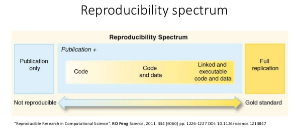

Data Science Workflow
Data Science
데이터로 부터 새로운 통찰력과 지식을 얻기 위한 학문이자 실무분야
컴퓨터 관련 전공자 외에도 모든 분야의 연구자들에게 필요한 기반지식
4차 산업혁명의 근간에 데이터가 존재
DS Workflow
Hadley Wickham은 data science workflow를 다음과 같이 정의:

Source: R for Data Science by Garrett Grolemund and Hadley Wickham.
Import
- CSV, XML, HTML, Json 등 다양한 형태의 데이터를 Web crawling 등 다양한 방식으로 수집하거나 R로 import 하는 방법 습득
Tidy
Tidy data와 이를 위한 Tidyverse 방법론 습득
SDMX, 표준의 중요성
Transform
DB를 활용한 대용량 데이터 핸들링 방법
high performance computation
Visualize
- ggplot2
Model
Leanear Regression
Repeated Sales Methods
tibble과 List columns을 활용한 모델링 및 분석결과 단순화 방법론
Communicate
R markdown
shiny
Importance of Programming
Automation
High performance
Advanced analysis
Reproducibility
Reproducible Research
Reproducibility is “the idea that data analyses, and more generally, scientific claims, are published with their data and software code so that others may verify the findings and build upon them.”
